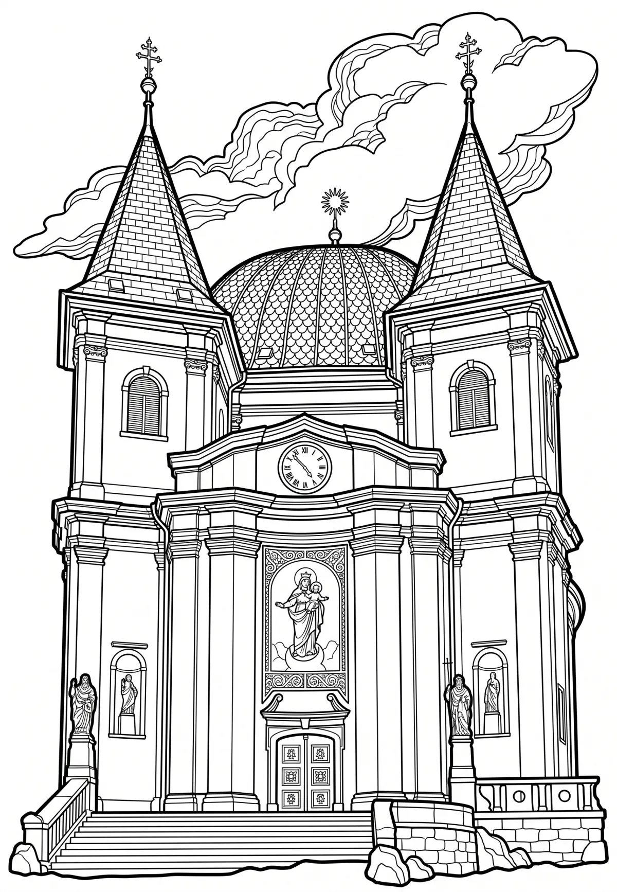

Svatý Hostýn
Zlínský kraj · 718 m n. m.

historická památka · #050
Bazilika Nanebevzetí Panny Marie je poutní kostel s titulem basilica minor stojící na vrchu Svatém Hostýně. Jde o jeden z nejvýznamnějších mariánských poutních kostelů na Moravě, ke kterým patří také Velehrad nebo v Čechách Svatá Hora u Příbrami.